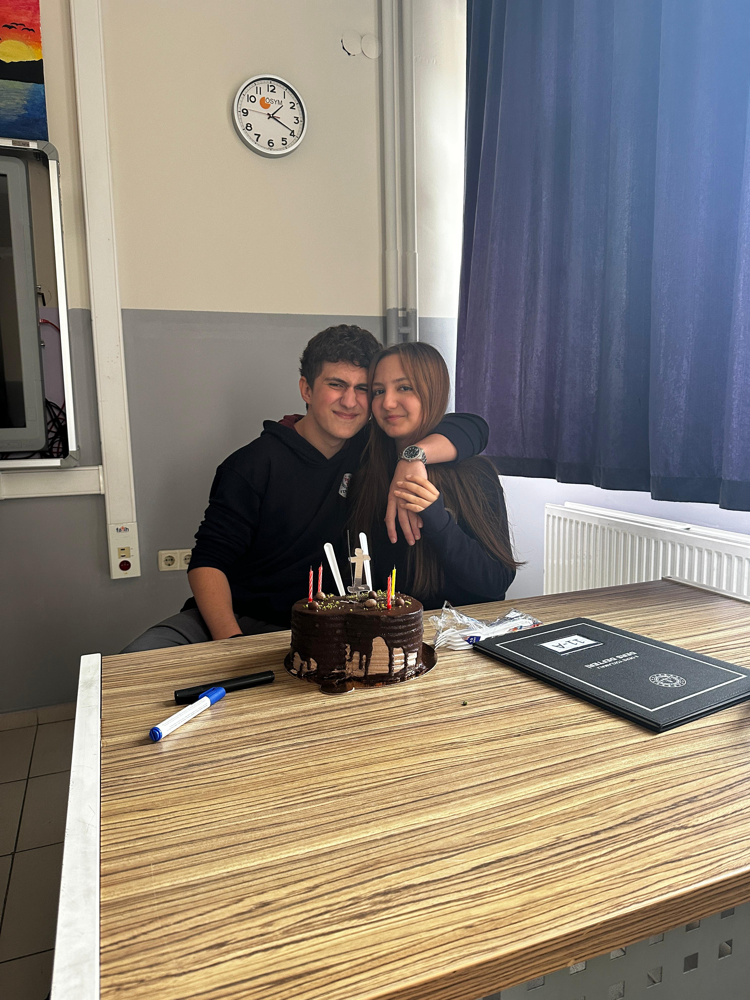
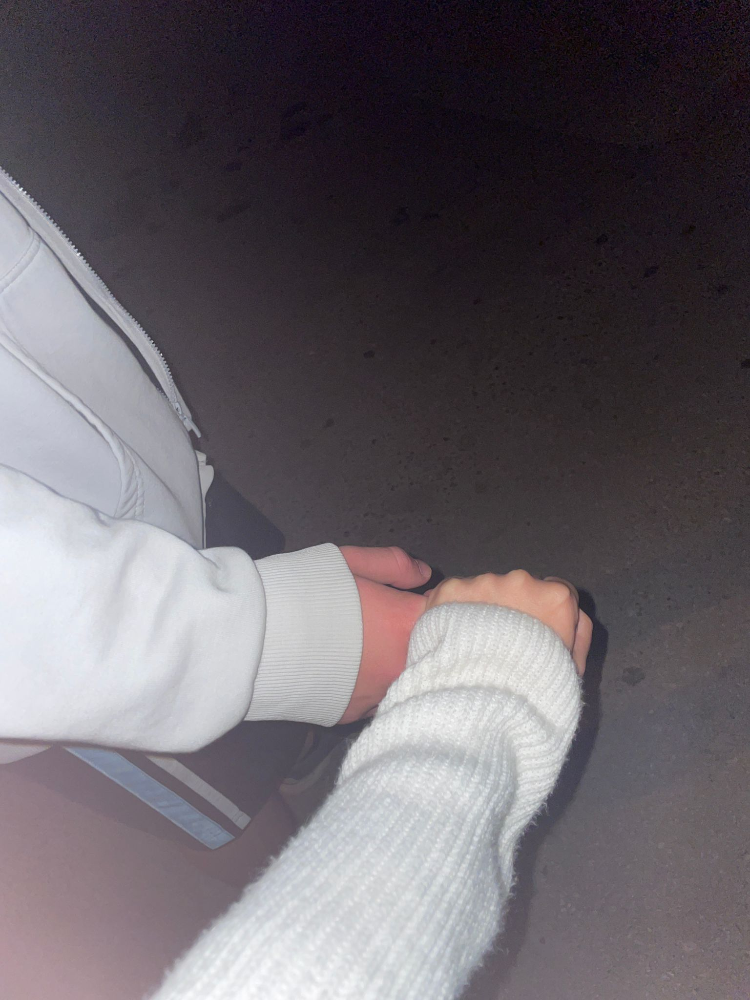
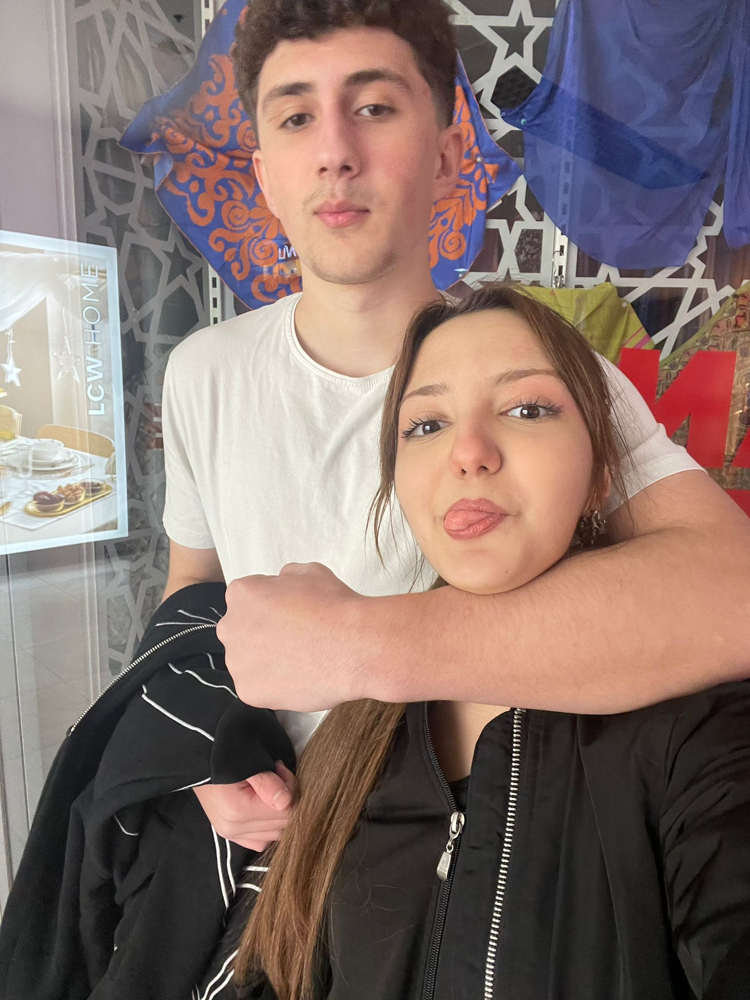
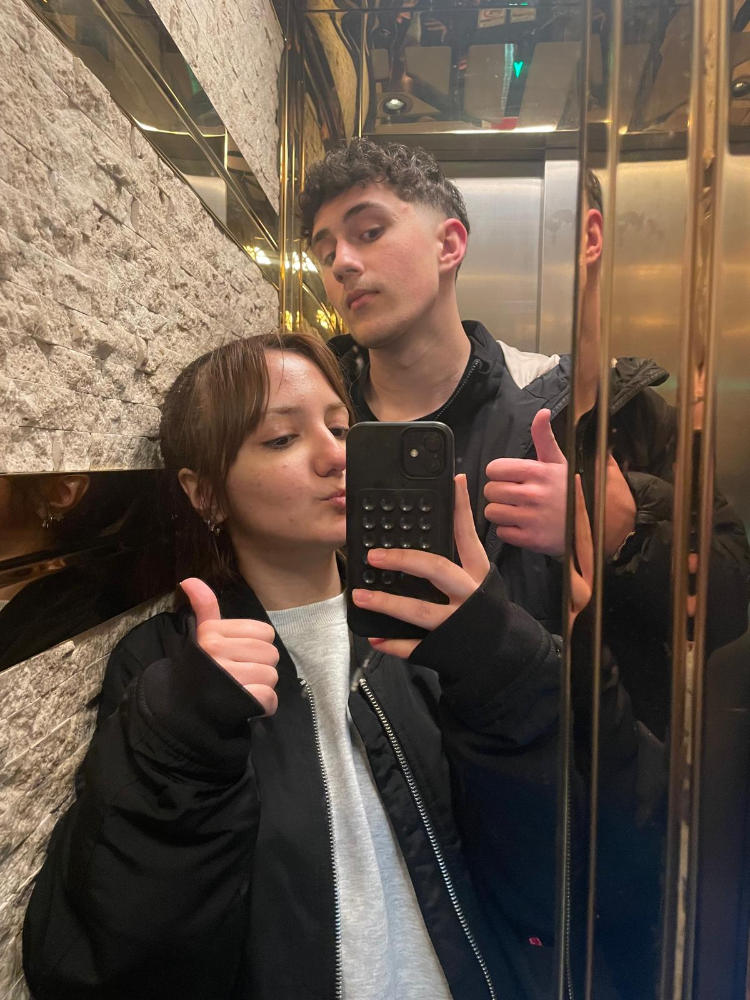
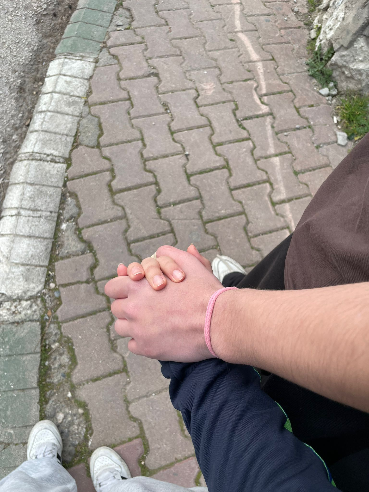
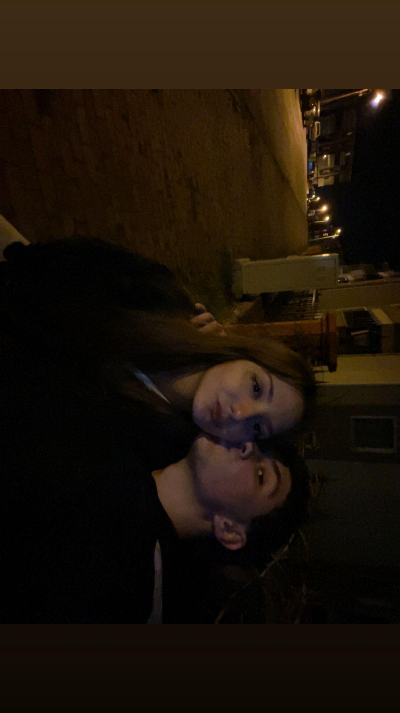
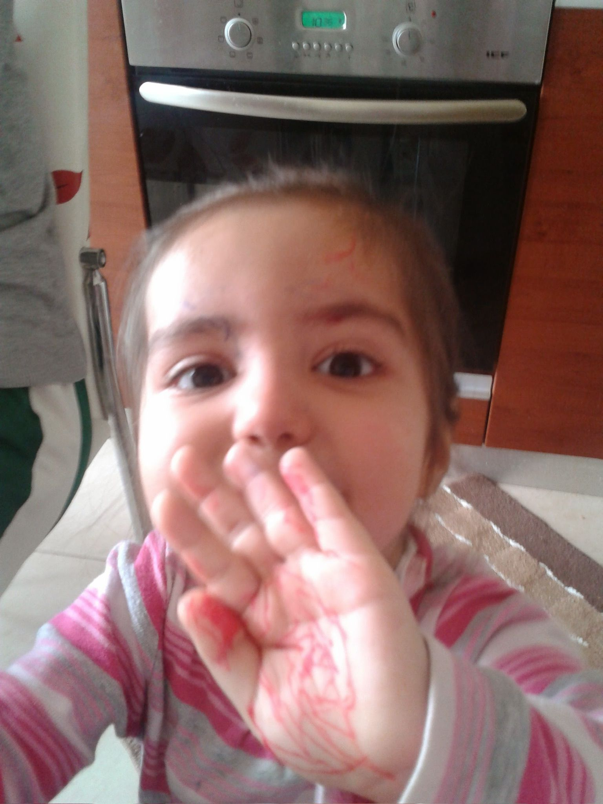
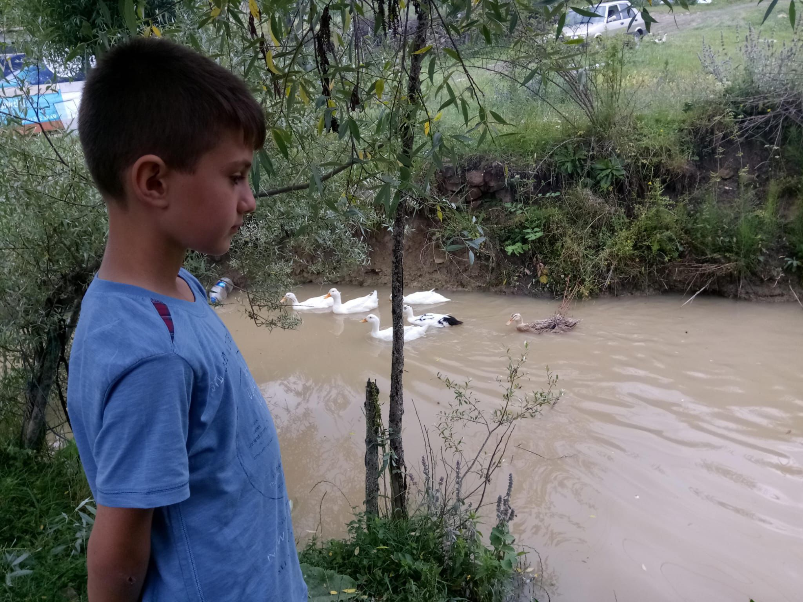
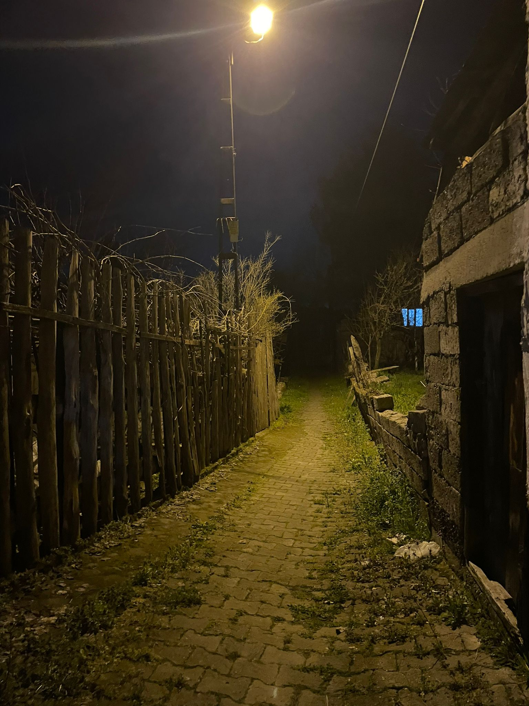

İpek, seni ne kadar sevdiğimi kelimelerle anlatmak bazen gerçekten zor geliyor. Çünkü kalbimde sana karşı olan duygularım o kadar büyük ki, bazen hiçbir kelime yeterli olmuyor. Ama yine de bilmeni istiyorum ki hayatımda olduğun için kendimi çok şanslı hissediyorum. Senin gülüşünü görmek, sesini duymak ya da sadece yanımda olduğunu bilmek bile günümü güzelleştirmeye yetiyor. Bazen düşünüyorum da, insan birini bu kadar nasıl sevebilir diye… Ama sonra seni hatırlıyorum ve anlıyorum. Çünkü sen gerçekten çok özelsin. Seninle konuşmak, seninle vakit geçirmek, hatta sadece sana bakmak bile insana huzur veren bir şey. Hayat bazen karmaşık olabiliyor, bazen günler zor geçebiliyor ama senin varlığın her şeyi daha güzel ve daha anlamlı hale getiriyor. Seninle paylaştığım her an benim için çok değerli. Küçük bir anı bile yıllarca hatırlayabileceğim kadar kıymetli oluyor. Sana baktığım zaman sadece bugünü değil, gelecekteki güzel anları da hayal ediyorum. Beraber güleceğimiz günleri, birbirimize destek olacağımız zamanları, ve birlikte yaşayacağımız tüm güzel anıları. Sen benim hayatıma sadece bir insan olarak değil, aynı zamanda mutluluk, huzur ve anlam getiren biri olarak girdin. Bu yüzden sana olan sevgim her geçen gün daha da büyüyor. Bazen sadece şunu söylemek istiyorum: İyi ki varsın İpek. Gerçekten iyi ki varsın.








